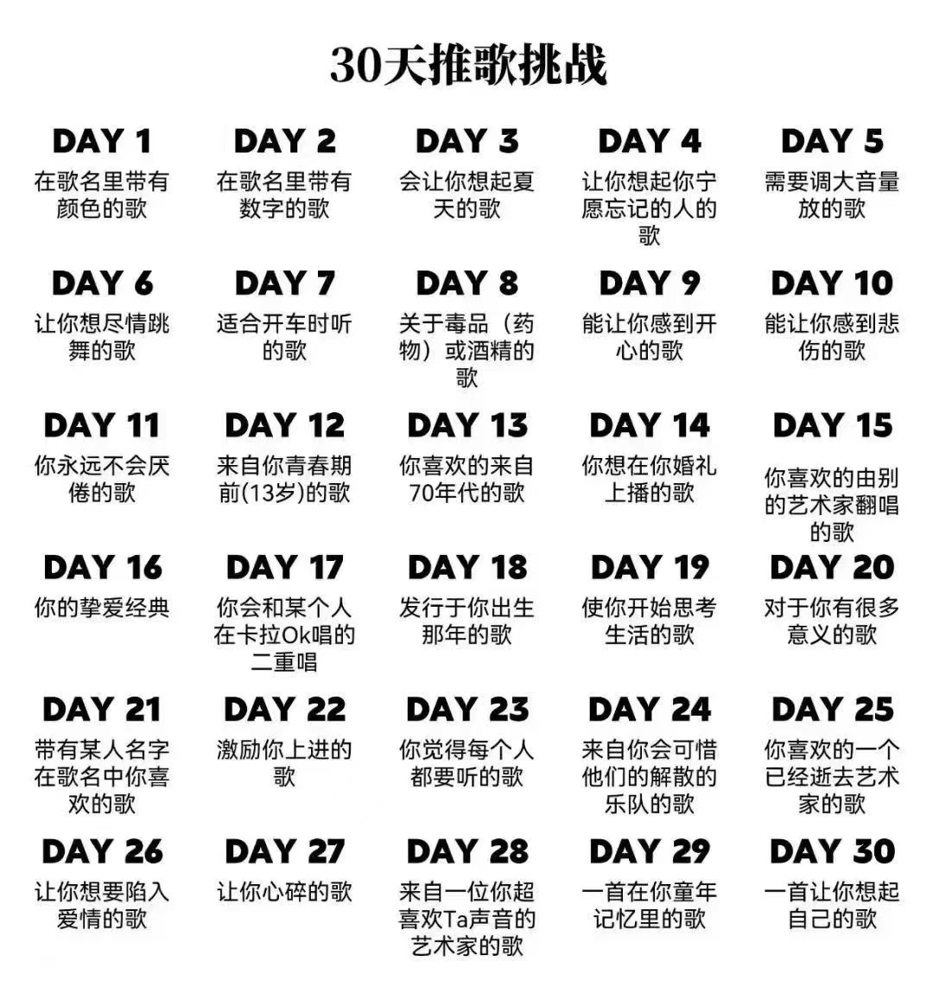
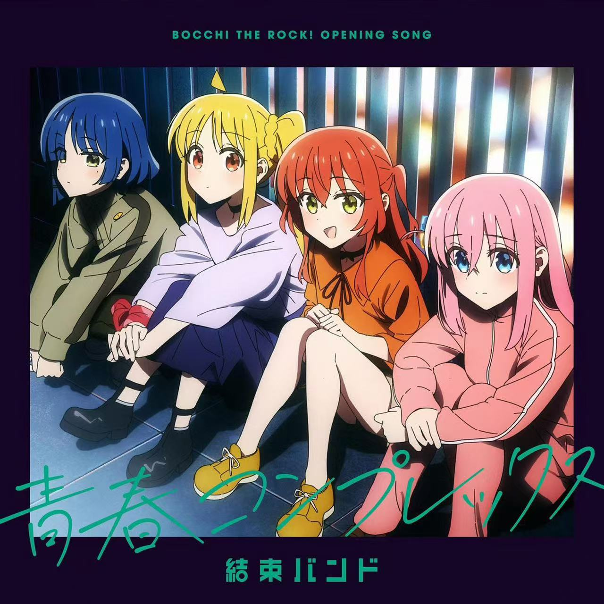
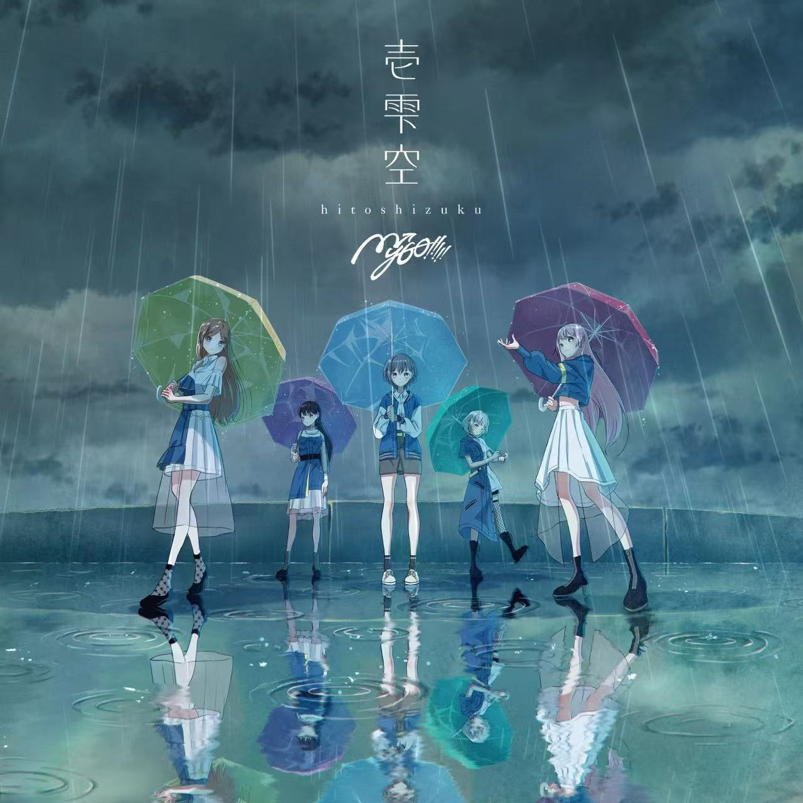
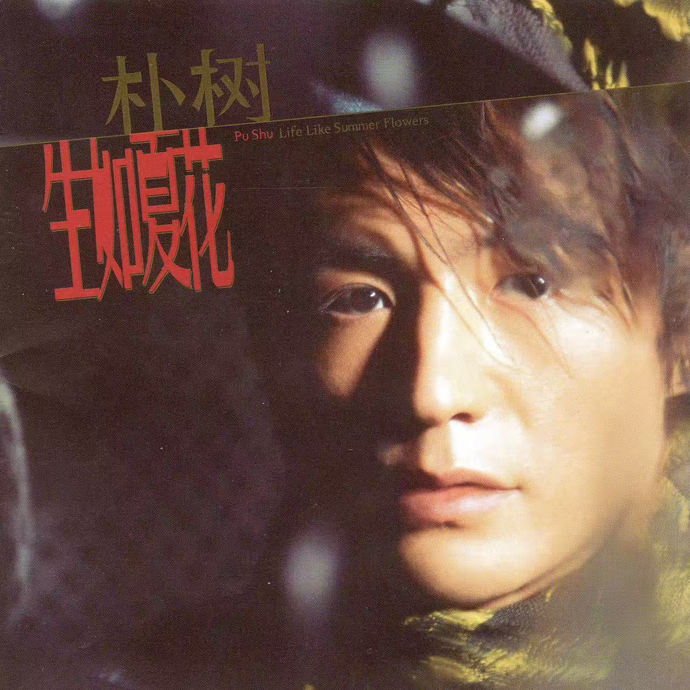
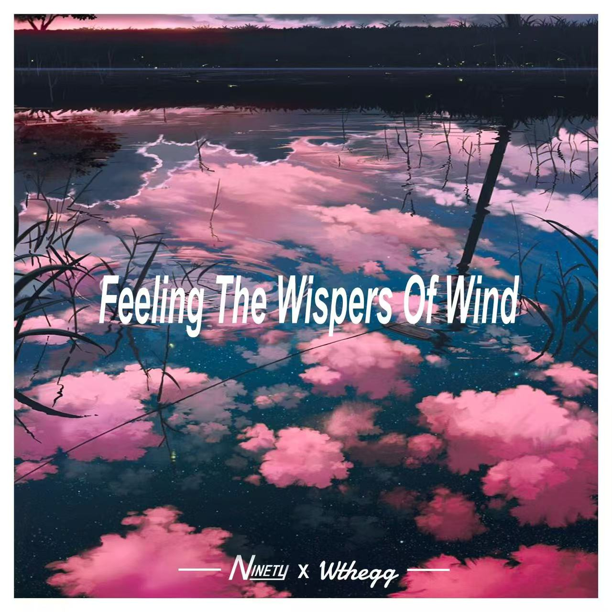
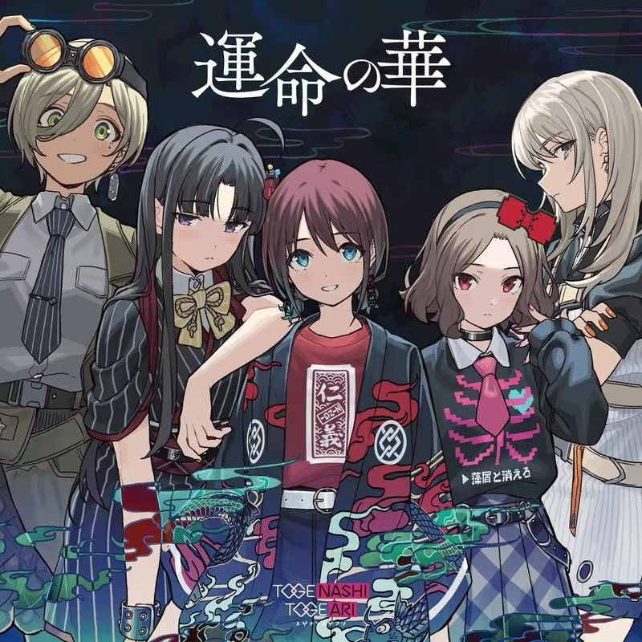
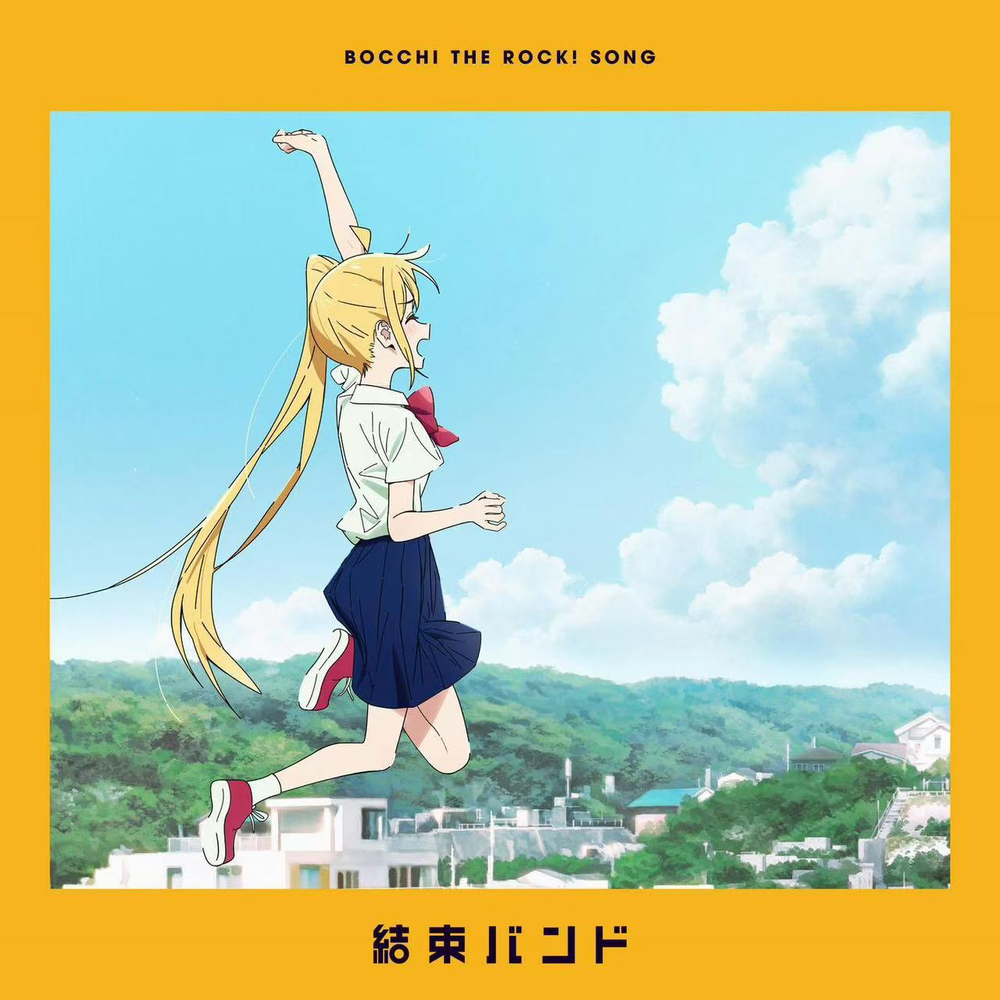
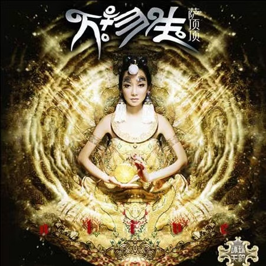
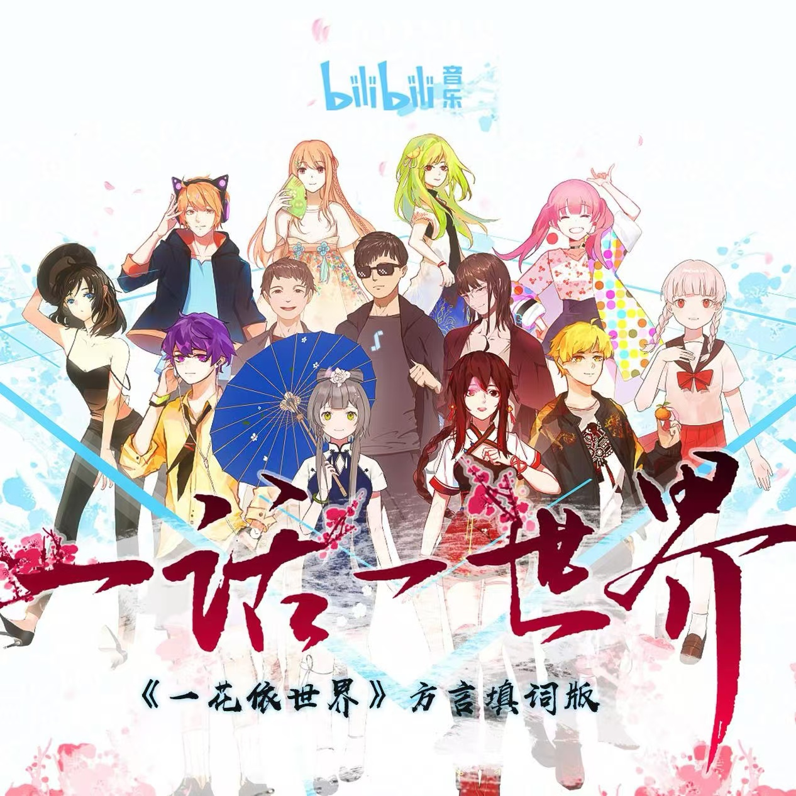
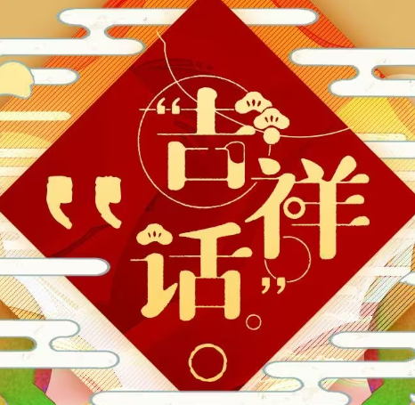

TNTの30“次”推歌
在puq看到了这个神奇的小玩意，然后想三十天也太漫长了，于是干脆直接一次性推完好了
但是一次推完也太没挑战性了，于是TNT决定在不看题目前往自己的常驻歌单里加上六十几首歌，然后这三十首歌只能在这六十几首歌里挑出来

DAY 1 在歌名里带有颜色的歌

挺经典的，虽然这里面青既不是中文，也不是指代蓝色
DAY 2 在歌名里带有数字的歌

BanGDream Mygo OP，这里面“壱”就是中文“一”
什么？你说上面那个不算？
[八珍玉食]
DAY 3 会让你想起夏天的歌
打上花火
八爷典中典了吧……类似的还有lemon
想到夏天，一方面这首歌是那个意识流烟花电影ed，电影本身就是夏天的事情，另一方面是我中考之后在杭州热成傻狗那段时间放进歌单听的，所以听完会想到夏天
DAY 4 让你想起你宁愿忘记的人的歌
哈哈，我就一乐子，哪来的那么深情，什么宁愿忘记的人……
生如夏花

为什么推这首呢，因为他妈的这首歌当时在高中中午会放，那一阵子经常考试，所以能联想到学校的某个**管理员，我真的会骂死他，纯纯sb
DAY 5 需要调大音量放的歌

字面意思，这首歌整理音量偏小，需要调大音量放……
DAY 6 让你想尽情跳舞的歌
尽情跳舞的没有，主要是我不跳舞，尽情溜冰的倒是有一堆……
第三套全国小学生广播体操-七彩阳光

冲刺！冲刺！♿🧊♿
DAY 7 适合开车时听的歌
欸，我没开过车，但是我骑过电动车
忘れてやらない

骑电动车听这个，何尝不是一种溜冰
DAY 8 关于毒品（药物）或酒精的歌
这完全根据答案出题好吧……
Cypis - Gdzie jest biały węgorz ? (Zejście)

嘿嘿，跳舞的奶牛
其实可以推一下老匹或者别的p主的歌的，貌似术口力这块讲这个的还挺多，但我一时间想不起来就是了（看来我术口力还是听的太健康了）
DAY 9 能让你感到开心的歌
wk我还想推忘れてやらない，真的听完很塔玛开心
Best Day Of My Life(Single Version)
美版“今天是个好日子”，最开始是23年春节（疫情末尾）去三亚时候听的，疫情结束/提前放假/海南岛度假，听上去就很爽……
之后我在6月9号（高考之后）爽听这首歌，规划了出门旅行的方案，wc更爽了
DAY 10 能让你感到悲伤的歌
上山岗
其实还有相遇天使，但是留着放大招，万一后面有什么神奇的挑战……
这首歌虽然比小孩小孩出的早，但是我感觉劲比小孩小孩大（可能因为我没生过孩子），有点像那个什么“朋友的情谊呀比天还高比地还辽阔”，加上绘总的绝美音线，我超无敌
事先声明我并不是不喜欢原版，我感觉教主调的原版更多是一种抒情，转音调的很高，听上去蛮悲凉的，很有沧桑感（真·请听我大声唱）但是秋绘的翻唱就像是一种娓娓道来，在讲故事一样
总之感谢ilem
DAY 11 你永远不会厌倦的歌
我超！冰！
神のまにまに
（神流应该是有封面的但是它收录的专辑是这个封面）
诶，虚晃一枪，没选雑踏僕らの街，是因为杂沓十月份才加进歌单，不好判断它是不是真的没让我听厌（但是其实这歌基本从那时候开始就一直在反复溜，大概率不会厌倦），于是选了reruriri的神的随波逐流
吗的，二次元过大年，这首真的绝杀
DAY 12 来自你青春期前（13岁）的歌
没太读懂，是说我13岁前听的歌还是13岁前有的，现在才听的歌（？
牧歌
我超真服了，正听着这歌呢结果电脑上发现分享不了，真是赶在下架前的那一刻把这歌下载了
傲日其楞的牧歌，是12岁初一时候听的，那会还没头地练这首歌来着，声音很有穿透力啊，虽然是我青春期前的歌但是现在还是很喜欢
DAY 13 你喜欢的来自70年代的歌
专门去查了一下恭喜发财，结果是05年的……
君は薔薇より美しい
没有封面……
好险（这首歌是1979年的），在歌单里找到了邓紫棋的喜欢你和Rick Astley的Never gonna give you up，结果都是八十年代的。（但我真的不听七十年代歌啊）
干嘛呐~~~~~~~~~~~
DAY 14 你想在你婚礼上播的歌
wk，这俩很难抉择啊，都丢上来吧
不问天
大喜
良缘不问天，好事数人间
看新人羞涩相对拜
估计我结婚的时候别的歌都不放了，就这两首循环就挺好……
DAY 15 你喜欢的由别的艺术家翻唱的歌
翻唱的歌不是多了去了……
ハレハレヤ
原来是flower的，被黑宗介拿过去乱剪波妞视频。还好有应急食品翻唱……
这首歌翻唱原唱和上山岗异曲同工，但是这首歌原唱转音明显有点像是以声为美而没关注词，唱出了一种喝清酒喝醉了的汉子的感觉（x），翻唱则很好地照顾了歌词背后故事，更委婉温柔了一些
唉，要是让我遇到一个能救起来的狐狸该有多好……
DAY 16 你的挚爱经典
前前前世(movie edit.)
无脑，radwimps牛逼就完事了
DAY 17 你会和某个人在卡拉OK唱的二重唱
i人，刚记事的时候被带到K去吃果盘喝饮料，自从上了一年级，就再也没去过ktv
不过要是两个人唱的话，可能是打上花火？
这个就不推了，打死我都不会去ktv的
DAY 18 发行于你出生那年的歌
嗨嗨，这个我有经验
万物生(梵)

是06年的歌，五年级去海口的时候，飞机落地放的这首歌，结果找了两年一直没找到。后来初中有一次坐车听到，听歌识曲找到的这首歌
总之是当时也溜了一阵子冰，一直在循环梵文版
DAY 19 使你开始思考生活的歌
前面提到的有上山岗、神的随波逐流，有首歌触动挺大但是不太适合推的叫从前说，这再推首新的
【bilibili音乐出品】一话一世界（《一花依世界》方言合唱版/bilibili好乡音活动曲）

原版是洛天依生贺一花依世界，原版词填的就很美，这首词加上方言了，我超，太喜欢了
思考生活的话，我可能不会去思考生活的意义等等比较高深的东西，更多会去想怎样更好地面对生活，这种歌可能调子比较欢快，词也很积极向上，但是实际上背后会更深的触动人心
（但是杭州话真好听）
DAY 20 对于你有很多意义的歌
（我认为一首歌对一个人来说只能有一个意义）
吉祥话

说实话，发生在这首歌上的事情太多了，意义过度复杂
DAY 21 带有某人名字在歌名中你喜欢的歌
呃……先不说我喜不喜欢，要不你找找哪首歌带人名呢……？
我的祖国
专辑图就没必要配了
一条大河波浪宽，风吹稻花香两岸。这种歌词放在什么时候都能称得上是上品，雅俗共赏，真正的好歌词，再加上老一辈艺术家可柔可刚的声音，这首歌绝对是我心中的第二国歌
至于人名，这首歌带着我祖国母亲的名字
DAY 22 激励你上进的歌
草了，早知道不那么快放神的随波逐流了
前面推过的符合这个的有：上山岗、神的随波逐流、一话一世界、绝不会忘记
这里推一首K-ON的歌
天使にふれたよ！
相遇天使可以说是HTT神曲了（神曲一大堆，滑滑蛋/lazy/nothanku/米饭是菜/U&I）